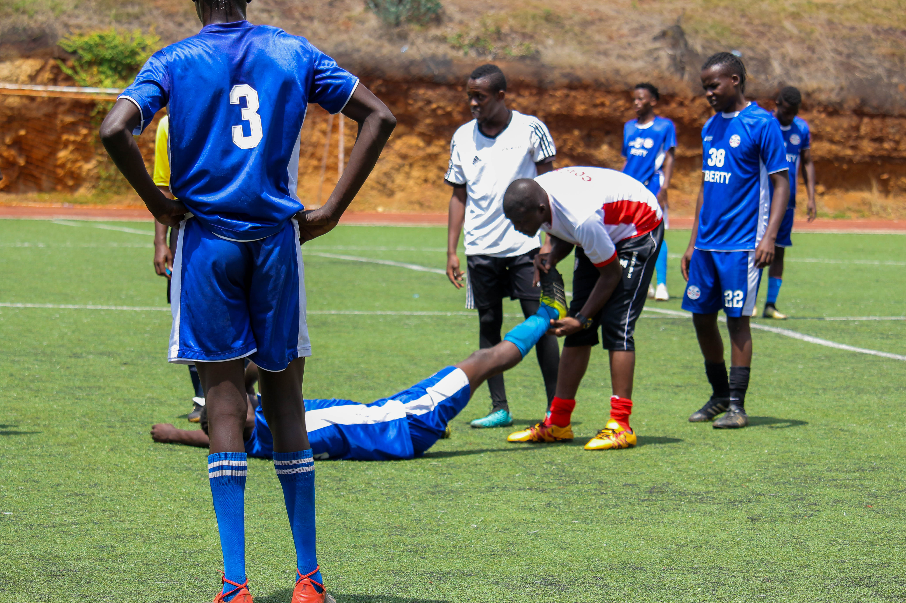
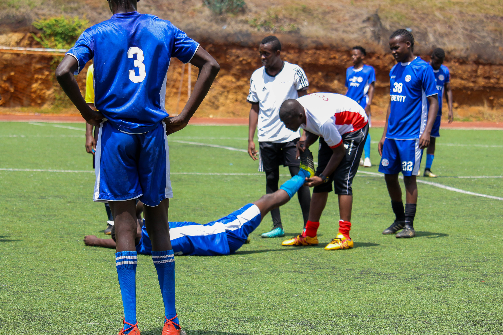

⚽🔥 20220507_204722.jpg)
Kerugoya sportiff is a football club whose main objective is to develop football talents of young talented footballers.For this reason the age factor of its players is as follows;U14,U17 and U23 which is the limit.It is located at kerugoya town.Its headed by Coach ZACHARY MBITI(0723244447) who is a former NSL and AFCLeopards football player.He is an accountant who is a finalist in CPA .He is currently working in a coffee oraganisation in Kerugoya Town where he works during the day and attends training at evening.Below is his photo.

The following is the name and the photo of the captain when playing against liberty academy.

He is in his final year at MOI UNIVERSITY(ELDORET) pursuing Bachelor of Education(Arts).
Below is a list of the players and their positions

1.PATRICK WANJURI AGE:18 FORM 3:MUTIGE BOYS HIGH SCHOOL

2.Brian Wangu AGE:20

3.DIVER MUTHII AGE:20

OCHIENG(OCHII) POS:CB AGE:20

ERICKO POS:CB AGE:23

ADAN GUYO GOLISA(WALLALLO) POS:CB/RB/LB AGE:20 Y2TECHNICAL UNIVERSITY OF KENYA:SOCIOLOGY

SIMON MUTINDA(BASATA) POS:CDM AGE:20

LEE(KABUJU)(ASS CAPTAIN) POS:CDM/ATM AGE:20

STEWARD CHOMBA POS:CDM AGE:20 Y2 JOMO KENYATTA UNIVERSITY OF AGRICULTURE AND TECHNOLOGY:MECHANICAL ENGINEERING

KINYUA(SUVU) POS:LW/RW/ATM AGE:20

SAMIDOH POS:ST/ATM AGE:20

ALEX SHOTTOH POS:RW/LW/ATM AGE:20

DANIEL KIOKO MUSEE POS:ST AGE:18

SAMUEL MURAGE POS:ST,ATM,LW,RW AGE:20

CHUMA WANGU POS:RW/LW/ATM/ST AGE:20 Y2 IT MULTIMEDIA UNIVERSITY OF KENYA
Discipline is key in this club.It uses KERUGOYA STADIUM as its training ground as well as its home ground.It has played friendly matches against major teams in kenya for example LIBERTY ACADEMY so as to expose the talents of its young players.Below are photos of the match against LIBERT ACADEMY.

Receiving a word from former AFCLeopards and proffessional goalkeeper mohammed.
Below are other images

 

.jpg)